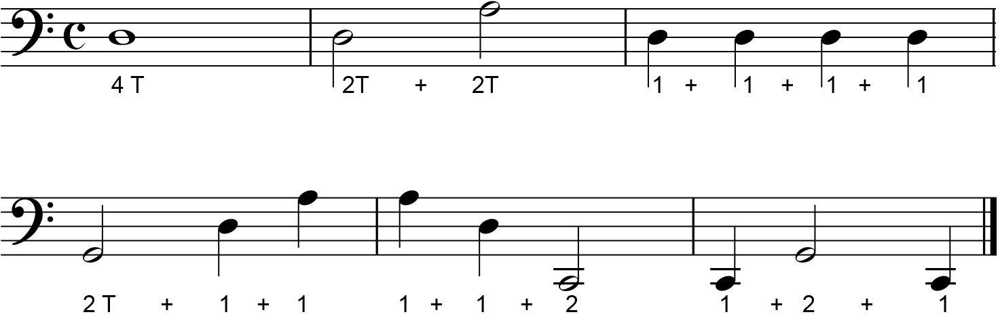
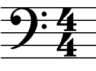
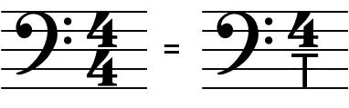
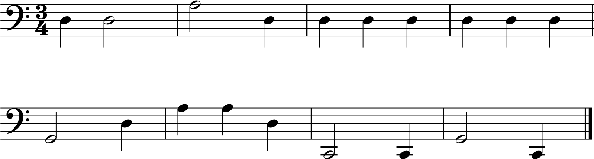
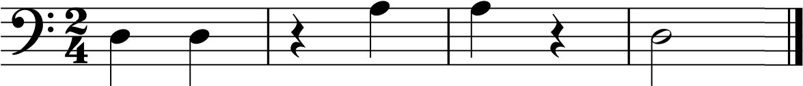
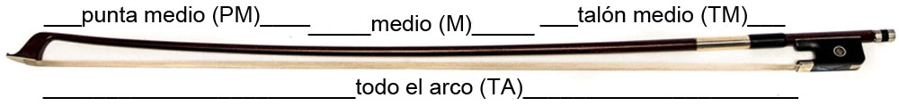
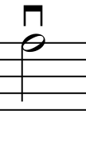
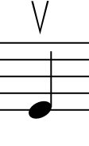

Teoría aplicada - Clase 2
Silencios
Hasta el momento estuvimos hablando de la duración de los sonidos pero la música no solo se construye con sonidos, ¡también utilizamos los silencios!
Y como puede preverse, también le asignamos una duración a los silencios. En las siguientes imágenes se ven los silencios que se corresponden con los sonidos de igual duración.
El silencio de redonda dura 4 tiempos y se escribe "colgando" de la 4ta línea del pentagrama:

El de blanca dura 2 tiempos y se escribe por encima y apoyado sobre la 3er línea. No es importante poder distinguirlos visualmente, el contexto nos va a llevar a darles el valor que les corresponde:

El silencio de negra con una duración de 1 tiempo:

Pero ¿y cómo se tocan los silencios? ¡No se tocan! Se detiene el movimiento del arco por completo y se espera contando los tiempos que dure el silencio y luego se sigue tocando las notas que tengamos.

Compases
En la imagen anterior vemos que entre las notas y silencios hay unas barras verticales. El espacio que hay entre barra y barra se llama compás.
El primer compás es entre la clave de Fa y la primera barra de compás, no se dibuja una barra inicial.
El último compás está delimitado por una barra vertical, justo antes de la negra, y una doble barra final para indicar que la pieza musical termina ahí.
Las barras de compases surgieron como necesidad de organizar las notas y silencios y para hacer más fácil la lectura y mientras tocamos no perdernos entre tantas notas.
¿Cuál de los 2 pentagramas te parece que nos presentan las notas mejor organizadas y facilitan la lectura?

Indicación de compás
Dijimos antes que lo que había entre barra y barra de compás se denominaba compás pero todavía no establecimos el tamaño de ese compás, cada cuánto van a aparecer esas barras verticales.
Al comienzo de cualquier obra nos encontramos con el pentagrama y con la clave usada, para nosotros por mucho tiempo va a ser la clave de Fa,
e inmediatamente después, podemos encontrar un simbolo parecido a una C.

Esa C significa que cada compás tiene 4 tiempos o pulsos y tiene que ser igual para todos los compases. Comprobémoslo:
También el compás de 4 tiempos suele indicarse de la siguiente manera y no hay ninguna diferencia con la anterior C.
Por ahora vamos a decir que el compás de 4/4 se podría escribir de la siguiente manera: 4/T (Donde el número de arriba indica la cantidad de tiempos y justamente la T se refiere a Tiempos o Pulsos. Nunca lo vamos a encontrar escrito de esta última manera.)
Por supuesto que existen los compases de 3 tiempos:
... y los de 2 tiempos. (Hay muchos más.)
Calderón
Cuando en una partitura vemos que aparece este símbolo sobre una nota o sobre un silencio (también se puede encontrar debajo) nos está indicando que debemos prolongar la nota o silencio y darle un valor mayor a lo que le corresponde.
En el ejercicio Nro 1 del Método de Dotzauer está lleno de estos ejemplos.
Barras de repetición y barra final
Son barras dobles con 2 puntitos a la izquierda o a la derecha que nos indican qué es lo que hay que repetir.
El siguiente ejemplo se debe tocar de la siguiente manera:
- Toco el primer compás
- Toco el segundo compás y me encuentro con la doble barra con los puntos hacia la izquierda, indicándome que debo repetir todo desde el comienzo.
- Toco otra vez los dos compases y al llegar a la barra de repetición sigo con el 3er compás hasta la barra final.
En el siguiente ejemplo se agrega una barra de repetición al inicio del 2do compás:
- Toco el primer compás.
- Toco el segundo compás y repito entre las dos barras de repetición. Lo que queda encerrado entre los puntos de la primera y segunda barra es lo que hay que repetir.
- Sigo al 3er compás y finalizo.
En este último ejemplo la secuencia es esta:
- 1er compás.
- 2do compás y lo repito.
- 3er compás y lo repito.
Arco

Por el momento vamos a tocar utilizando toda la longitud del arco. Esto se indica normalmente escrito en lápiz por el profesor, con la indicación TA (todo el arco).
A partir del ejercicio nro. 7 del Dotzauer vamos a utilizar además de TA, el talón-medio (TM) y punta-medio (PM).
Arco tirando y empujando
Finalmente el símbolo usado para tocar con dirección Talón hacia la Punta (Tirando) es:
y (empujando) el arco con dirección Punta hacia el Talón:
Ejercicios